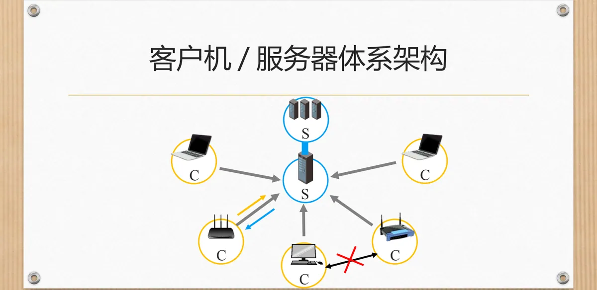
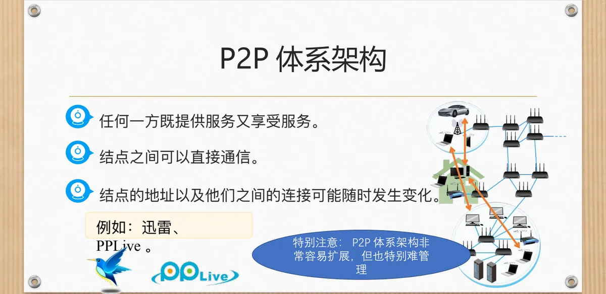
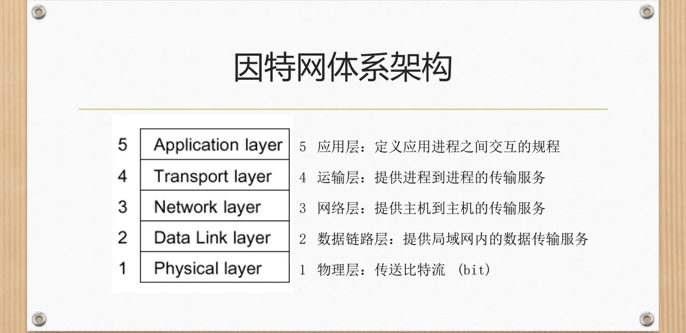
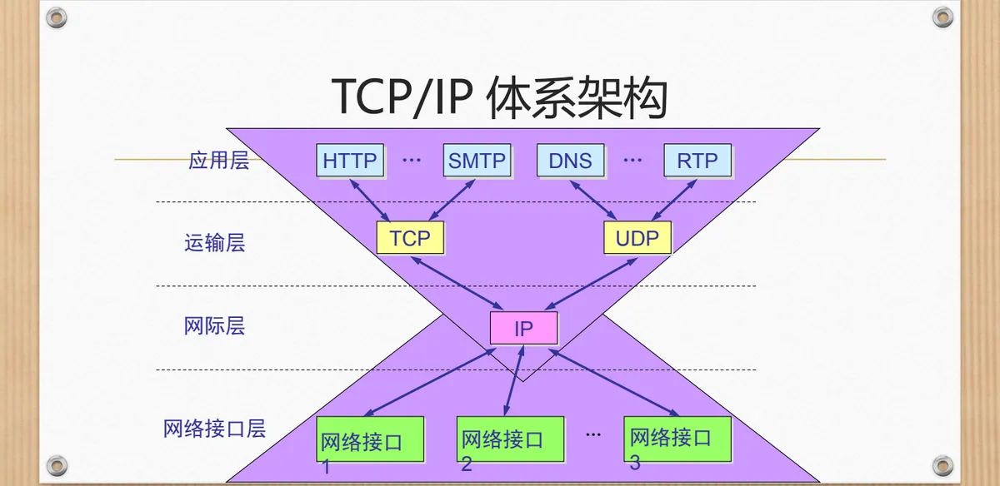
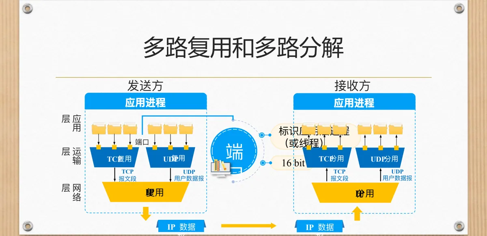
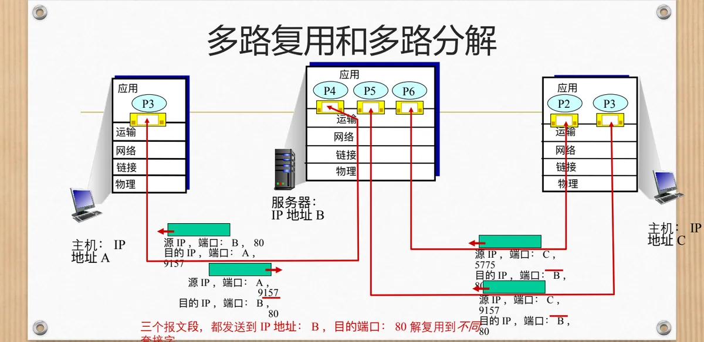

计算机通信与网络 · 第二版讲义 · 第 3 章 网络服务及应用
3.1 网络服务概述
网络的价值来自它上面运行的应用。本节先看常见的网络应用和网络应用程序是什么，再讨论应用之间通信的三种体系架构，然后对照应用对传输服务的要求与网络提供的 TCP、UDP 两种服务，最后讲运输层的多路复用、多路分解，以及端口和套接字。
1. 常见的网络应用
课件把常见的网络应用摆成四类：获取信息——浏览新闻，用百度、Google、Bing 等搜索引擎检索网页，浏览器有 IE、Chrome、FireFox、360 浏览器、QQ 浏览器、Maxthon 等；交流——和熟悉或陌生的朋友聊天（微信、QQ、阿里旺旺、MSN Messenger、Skype、UC），或者打网络电话（如 Net2Phone）；娱乐——网络游戏对战（联众、CS、魔兽世界、王者荣耀、绝地逃生）与在线视频（爱奇艺、优酷、腾讯视频、暴风影音、PPLive、VOD 点播）；资源共享与文件传送——迅雷、电驴、BT、FTP 等。
这些应用功能各异，在网络这一侧做的事却是同一件：把数据交给网络，请网络送到对面的某个进程。要研究的正是它们共同的问题——谁来提供服务、谁主动发起通信、应用对网络提出什么要求、网络能提供什么服务。
2. 什么是网络应用程序
课件的说法很朴素：能够从网络接收数据、对数据进行处理、再向网络发送数据的程序，就是网络应用程序——数据的来源和去向都在网络上，这是它与单机程序的分界。课件还打趣说，它要把数据友好地展现在界面上，让你知道它在做什么，有时还弹出小窗口提醒你别太辛勤工作。界面只是外壳，真正决定应用好用与否的，是它向网络提出的要求。
3. 网络应用之间通信所采用的体系架构
网络应用总要和对端交换数据，于是就有「谁提供服务、谁请求服务」的问题。课件把应用之间通信采用的体系架构分为三类：客户机/服务器体系架构、P2P 体系架构和混合体系架构。
（1）客户机/服务器体系架构（C/S）
C/S 体系架构（Client/Server）有两个特征：存在一个能够向客户机提供服务的服务器，以及一个或多个主动连接服务器、试图从服务器获取所需服务的客户机。课件举的例子是客户机一侧的 Edge 浏览器与服务器一侧的 WEB 服务器：浏览器主动连接、请求网页，服务器把网页送回去。

这种分工带来一条要特别注意的结论：客户机之间不能互相通信——两者之间没有直接通道，要交换数据只能各自与服务器通信，由服务器居中转达。另一处要留心的是服务器的处理能力：客户机可能很多，一台服务器扛不住所有请求，通常采用服务器集群（Server Farm），由多台服务器协同工作。
（2）P2P 体系架构
P2P 体系架构（Peer-to-Peer，对等）把服务提供者与请求者的界限抹掉了：任何一方既提供服务又享受服务，结点之间可以直接通信；结点的地址以及它们之间的连接可能随时发生变化。课件举的例子是迅雷、PPLive 这类文件分发与流媒体软件。

课件对它的评价是非常容易扩展，但也特别难管理：加入新结点几乎不需要批准，参与的人越多可用的资源越多；代价是没有统一的中心，谁在线、谁手里有什么内容随时在变。这一矛盾是 3.8 节 P2P 文件分发要继续讨论的问题。
（3）混合体系架构
两种架构各有短长，于是有了第三种：混合体系架构是 C/S 体系架构和 P2P 体系架构的混合体。一般做法是让中心服务器承担登录、检索一类需要掌握全局信息的功能，数据分发则交给对等方之间直接完成。
4. 应用需要网络提供什么样的服务
把数据交给网络以后，应用仍然有所关心。课件把这些要求归结为四点：传输和反馈的实时性——数据要按时送到，迟到就没有意义；安全性；带宽的自动控制——带宽能随网络状况自动适应；数据的可靠传输——不丢失、不出错。它们并非每个应用都同等需要：下载文件可以慢慢传，却不能丢一个字节；实时语音丢一点还能忍受，延迟大了就无法交谈。
| 应用程序 | 数据丢失 | 带宽 | 实时性 |
|---|---|---|---|
| 文件传输 | 不丢失 | 弹性 | 无 |
| 不丢失 | 弹性 | 无 | |
| Web 网页 | 不丢失 | 弹性 | 无 |
| 实时音频/视频 | 允许丢失 | 音频 5 Kb–1 Mb；视频 10 Kb–5 Mb | 100 msec |
| 存储音频/视频 | 允许丢失 | 同上 | few secs |
| 交互式游戏 | 允许丢失 | 几 Kb/s 以上 | 100 msec |
| 金融应用 | 不丢失 | 弹性 | yes and no |
表中能看出两条规律。一是文件传输、e-mail、Web 网页和金融应用要求数据不丢失，其余三类允许丢失——丢一点声音或画面只是瞬间的瑕疵，为此重传反而带来更大的延迟。二是前四种应用的带宽是弹性的，也没有硬性的时延指标；实时音频/视频和交互式游戏要求 100 msec 量级的时延，存储音频/视频可放宽到几秒。
5. 网络实际提供的传输服务：TCP 与 UDP
需求是一回事，网络实际能拿出什么又是另一回事。因特网的运输层提供两种传输服务。TCP（Transmission Control Protocol，传输控制协议）提供：面向连接——在客户端和服务器进程之间需要建立连接；可靠传输；流量控制——发送数据的速度决不超过接收的速度；拥塞控制——当网络超负荷时，束紧发送端，减缓发送速度。TCP 不提供实时性和最小带宽承诺：它不能保证数据在规定时间内一定送到，也不能承诺留出多少带宽。
UDP（User Datagram Protocol，用户数据报协议）正好相反：它在客户端和服务器进程之间实现「不可靠的」数据传输，不提供连接建立、可靠性保证、流量控制、拥塞控制和实时性，也不提供最小带宽承诺，只把应用交给它的数据打上端口号发出去。两者的差别不是好与坏，而是取舍。3.2 节要讲的 UDP 与 3.3 节要讲的 TCP 会分别展开，第一版讲义 5.3 UDP和TCP的对比给出了更系统的逐项对照。
6. 常用应用采用的传输协议
不同的应用按自己的需要挑协议，课件给出的对应关系如下：
| 应用 | 应用协议 | 所依赖的传输协议 |
|---|---|---|
| SMTP [RFC 821] | TCP | |
| 远程终端访问 | Telnet [RFC 854] | TCP |
| Web | HTTP [RFC 2068] | TCP |
| 文件传输 | FTP [RFC 959] | TCP |
| 流媒体 | 专有协议（如 RealNetworks） | TCP 或 UDP |
| 远程文件服务器 | NFS | TCP 或 UDP |
| IP 电话 | 专有协议（如 Vocaltec） | 通常用 UDP |
表中有两条线索：e-mail、远程终端访问、Web 和文件传输这些传统应用都要求数据不丢失，所以选择 TCP；流媒体和远程文件服务器两种协议都可能用上，要看具体实现；IP 电话则通常用 UDP——实时语音宁可偶尔丢一点，也不愿等待重传。表中还出现了「专有协议」，说明有些应用没有公开的标准应用层协议，各家用自己的实现（如 RealNetworks、Vocaltec）。
7. 因特网体系架构与 TCP/IP 体系架构
应用「提要求」与网络「给服务」的关系，放到分层结构里最清楚。课件给出的因特网体系架构自下而上分五层：
- 物理层：传送比特流（bit）；
- 数据链路层：提供局域网内的数据传输服务；
- 网络层：提供主机到主机的传输服务；
- 运输层：提供进程到进程的传输服务；
- 应用层：定义应用进程之间交互的规程。

与网络应用关系最直接的是上面两层：应用层的协议规定应用进程之间怎样交互，运输层负责把数据从一个进程送到另一个进程，前面讲的 TCP 与 UDP 都属于运输层。TCP/IP 体系架构则分四层：应用层、运输层、网际层和网络接口层。课件图中，应用层里列着 HTTP、SMTP、DNS、RTP 等协议，运输层是 TCP 和 UDP，网际层是 IP，网络接口层则对应网络接口 1、2、3……各种具体的网络接口，可见它把因特网五层中的物理层和数据链路层合在一起；而应用层里那些字母缩写，正是本章后面各节要展开的协议。

8. 多路复用与多路分解
一台主机上同时跑着很多应用进程，它们的数据都要经过同一个运输层、同一个网络层送出去。发送方一侧，应用层的多个进程（或线程）各自通过端口把数据向下交付给运输层，运输层把它们分别封装成 TCP 报文段或者 UDP 用户数据报，再交给网络层封装成 IP 数据报，送往同一条链路。多路复用（multiplexing）就是这种把多个来源的数据汇合起来、共用一条信道发送的过程。

接收方一侧正好相反：网络层收到 IP 数据报后把数据上交给运输层，运输层根据首部中的端口号判断它属于哪个应用进程（或者线程）再交付上去，这一过程称为多路分解（demultiplexing）。课件把两层的复用与分用都画了出来：运输层在 TCP 报文段与 UDP 用户数据报之间复用、分用，网络层在 IP 数据报之间复用、分用，用来区分来源的标志就是端口。
课件还用一个例子说明端口与套接字的对应关系：服务器端 serverSocket = new DatagramSocket(6428)，两个客户端是 new DatagramSocket(5775) 和 new DatagramSocket(9157)。服务器在 6428 端口等待，客户数据报的目的端口就是 6428；回送的数据报以 6428 为源端口、以对方进程的端口为目的端口。课件这一页还把两对端口的取值留成「？」，供课堂上现场填写。
9. 端口
端口值得单独一说，因为它是应用层与运输层之间的接口：端口的作用就是让应用层各种应用进程都能把数据通过端口向下交付给运输层，也让运输层知道应当把报文段中的数据向上通过端口交付给应用层相应的进程（或者线程）。也就是说，端口是应用进程在运输层的门牌号——进程把数据送到自己的端口，运输层就知道收到的报文段该交给哪一个进程。
从这个意义上讲，端口用来标志应用层的进程（或者线程），并且用一个 16 bit 的端口号进行标志，即共有 65536 个取值。要留意这里的层次：端口号标识的是主机内部的进程而不是主机；要在因特网上找到通信的另一端，还必须把主机也标识出来——这就是下一节的套接字。
10. 套接字
主机靠 IP 地址标识：IP 地址在互联网上唯一标识一台主机；进程靠端口号标识：端口号在一台主机上唯一标识一个应用进程。把两者结合起来，就可以在互联网上唯一地标识通信双方的一个端点，也就是一个应用进程，这个组合称为套接字（socket），写法上就是把 IP 地址和端口号写在一起，例如 131.6.23.13, 1500。
有了套接字，通信的每一端都可以用「IP 地址 + 端口号」来指名。反过来，只给端口号只能在一台主机内部定位进程，只给 IP 地址只能找到主机、找不到进程，二者缺一不可。第一版讲义 5.2 运输层端口号、复用与分用的概念对此有更细致的讨论。
11. 面向连接的复用和分用
UDP 的复用和分用只看端口号就够了：数据报送到哪台主机、哪个端口，运输层就把它交给绑定在该端口上的进程。TCP 因为面向连接，规则要复杂一些。课件给出的结论是：TCP 套接字由一个四元组来标识，即（源 IP 地址，源端口号，目的 IP 地址，目的端口号）；接收方主机根据这四个值将报文段定向到相应的套接字；Web 服务器为每一个客户连接都产生不同的套接字；服务器主机同时支持多个并发的 TCP 套接字，每一个套接字都由其四元组来标识。
为什么必须用四元组？因为服务器只有一个 80 端口，却要同时为很多客户服务。课件里的例子是：服务器 B 的 80 端口同时收到三个报文段，目的 IP 地址都是 B、目的端口都是 80，来源却不同——分别来自主机 A 的 9157 端口、主机 C 的 5775 端口和主机 C 的 9157 端口。只看目的端口无从区分，把源 IP 地址和源端口号一并看进去，它们才落到服务器上的三个不同套接字，各自对应一个客户连接。

反过来，服务器发往客户的报文段源端口同样是 80，客户主机靠目的端口号（9157 或 5775）把它交给自己的进程。可见「面向连接」在运输层的落实方式，就是为一对通信端点建立并维护一个由四元组确定的套接字。这与 3.2 节要讲的 UDP 恰成对照：UDP 的套接字只需目的 IP 地址和目的端口号，凡送到本机某个端口的数据报都交给同一个进程。
本节小结
- 常见的网络应用可分为获取信息、交流、娱乐和资源共享几类，它们共同的问题是：谁来提供服务、谁主动发起，以及应用对网络提出什么要求；
- 应用之间通信有三种体系架构：C/S（服务器提供服务、客户机主动连接，客户机之间不能互相通信，常用服务器集群提高处理能力）、P2P（结点直接通信、既服务又享受服务，地址与连接随时变化，易扩展但难管理）以及两者的混合体；
- 应用对传输服务的要求是实时性、安全性、带宽的自动控制和可靠传输：文件传输、e-mail、Web、金融应用要求数据不丢失且带宽弹性，实时音频/视频与交互式游戏允许丢失但要求 100 msec 量级的时延；
- 因特网实际提供两种传输服务：TCP 面向连接、可靠传输、有流量控制和拥塞控制，不提供实时性和最小带宽承诺；UDP 则把连接建立、可靠性保证、流量与拥塞控制一概省略；
- 因特网体系架构分五层（物理层、数据链路层、网络层、运输层、应用层），TCP/IP 体系架构分四层（应用层、运输层、网际层、网络接口层）；运输层用 16 bit 的端口号标志应用层的进程（或线程）；
- IP 地址标识主机、端口号标识进程，两者合成套接字；无连接时按目的端口分用，面向连接时 TCP 套接字由（源 IP 地址，源端口号，目的 IP 地址，目的端口号）四元组标识，服务器因此能用一个端口同时支持多个客户连接。